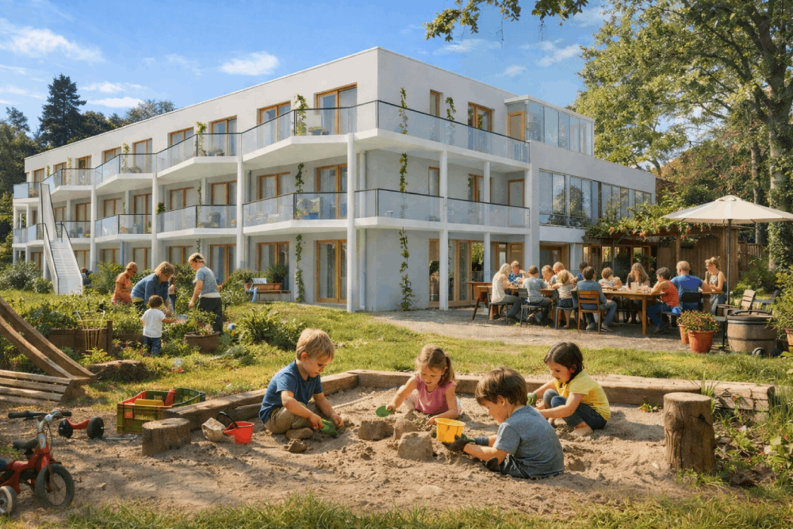
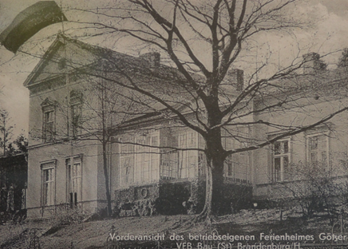
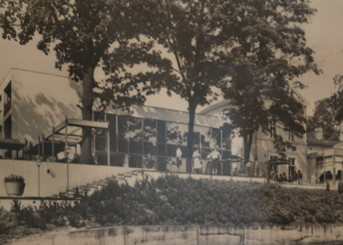
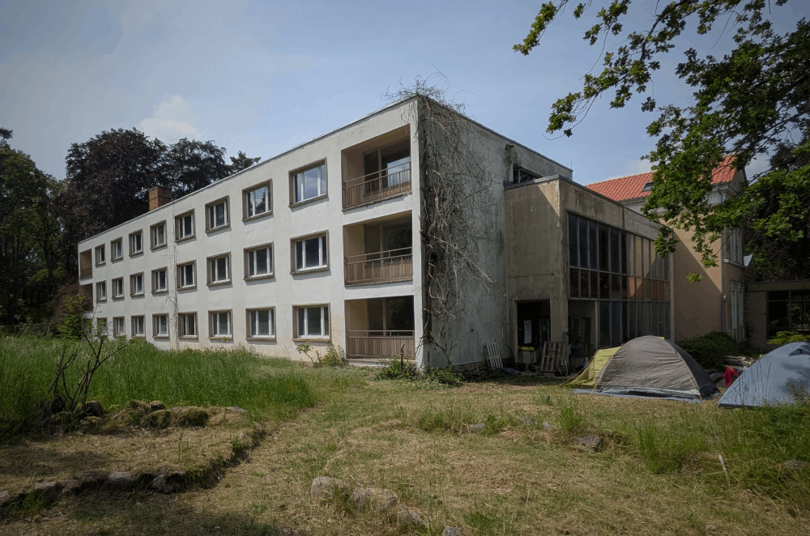

Das Haus
Die Vision
Das Bestandsgebäude stammt aus den 1970er Jahren und wurde ursprünglich als Betonplattenbau errichtet. Es wurde in den letzten 30 Jahren nur sporadisch genutzt und soll zunächst vollständig saniert und nach heutigen bauökologischen und energetischen Standards ausgerüstet werden. Im Rahmen des Umbaus werden unter anderem die vollständige Nord- und Südfassade des Hauses (die langen Seiten) komplett erneuert und mit einem Laubengang und Balkonen versehen. Im Rahmen des Innenausbaus werden dann 15 individuelle Wohneinheiten in Größen von 40 – 100 qm errichtet. Die heutige Empfangshalle im Erdgeschoss und der große Seminarraum im ersten Obergeschoß werden zu großen Gemeinschaftsflächen umgewandelt. Hier entstehen Räume für Begegnungen, Veranstaltungen und ein getrennter Coworking Space. Der umliegende Gemeinschaftsgarten wird von den Mitgliedern in Eigenleistung konzeptioniert und gemeinsam gestaltet. Das Haus grenzt direkt an die bereits teilsanierte historische Villa eines Ziegeleibesitzers, welche sich heute im Besitz der Landwerk Götzer Berge gGmbH befindet. Der Baustart wird für Mitte 2026 anvisiert, der Einzug ist dann gegen Ende 2027 geplant.

KI-basierte Visualisierung des geplanten Baus auf Basis des aktuellen Entwurfs des Architekturbüros.
Der Standort
Das Haus liegt im Dorf Götzer Berge in der Bergstraße. Dabei handelt es sich eine Sackgasse ohne Durchgangsverkehr. Die Straße wird fast ausschließlich von Anwohnern und gelegentlichen Radtouristen befahren. Immerhin führt der Europaradweg direkt durchs Dorf. Die Lage ist ausgesprochen ruhig. Überregional bekannt ist dafür der nahegelegene Rosenwaldhof: ein Seminarhaus und Ort der Stille. Mit dem Hof Birnbaum und dem Naturheilcamp Götzer Berge gibt es zudem weitere Übernachtungsmöglichkeiten für Erholungssuchende.
Die Karte wird über OpenStreetMap bereitgestellt. Beim Anzeigen können Daten übertragen werden.
Die Umgebung: Wiesen, Wald und Wasser
Das Dorf Götzer Berge gehört mit dem in rund 3 km Entfernung gelegenen Dorf Götz zur Gemeinde Groß Kreutz. Die Landschaft ist geprägt durch Wälder, Wiesen, die Nähe zur Havel und zu den Deetzer Erdlöchern- ehemalige Tonstiche, die heute zum Angeln und Baden genutzt werden. Im nahegelegenen Landschaftsschutzgebiet befindet sich seit der letzten Eiszeit der höchsten Hügel von Götzer Berge (108,6m über NHN). Nach kurzer Wanderung gelangt man zum 42 m hohen Aussichtsturm, der 2012 eröffnet wurde: eine Landmarke und ein beliebtes Ausflugsziel.
Der Blick in die Ferne und die Umgebung über den Wipfeln der Bäume ist atemberaubend. Man sieht die Erdelöcher, die Havel, Brandenburg, Potsdam und in der Ferne bei guter Sicht sogar Berlin.
Mobilität
Bis zum Bahnhof Götz sind es 5 km, dort hält der R1 im Stundentakt. Nach einer Verlängerung des Bahnsteiges hält der Zug voraussichtlich ab 2029 im 20-Minutentakt. Wir planen ein Mobilitätskonzept mit regelmäßigen Anfahrten zum Bahnhof.
Kitas und Schulen
Im Dorf Götz gibt es einen Kindergarten. In Jeserig (7km entfernt) gibt es eine Grundschule mit 270 Kindern und Ganztagesangebot. In Werder gibt es eine Waldorfschule. Weitere Schulen gibt es in den Städten Brandenburg, Potsdam und in Kloster Lehnin (freie Schule). Im Dorf selbst verkehrt regelmäßig ein Schulbus, der die Kinder zu ihren Bildungseinrichtungen bringt.
Die Historie
Das Dorf Götzer Berge entstand im Zuge der Tongewinnung. Die Ziegeleien lockten im 19. Jahrhundert Arbeiter an, die sich im Dorf niederließen. Von vergangenem Reichtum zeugt bis heute die ehemalige Ziegeleibesitzer-Villa des Hauptmanns Daude, um 1880 gebaut und mit Landschaftspark, Wasserturm und Grotte ausgestattet.

Historische Aufnahme der Villa des Ziegeleibesitzers
Nach dem 2. Weltkrieg nahm die Ziegelproduktion auf Grund von Rohstoffmangel, schwieriger Abbaubedingungen und wegen geringer abbaubarer Vorräte kontinuierlich ab. 1954 wurde die Ziegelproduktion endgültig eingestellt. Danach ging das Areal in den Volkseigener Betrieb VEB Kraftverkehr über und es entstand ein Kinderferienlager.
In den 1970er Jahren wurde die Villa in zum Schulungs- und Erholungsheim des FDGB umgebaut (Der Freie Deutsche Gewerkschaftsbund, Einheitsgewerkschaftsdachverband in der DDR). Es entstand der Anbau, der heute unser Wohnprojekt bildet: ein Zwischenbau mit Glasfront und Eingangshalle sowie das 3-geschossige Bettenhaus mit Seminarraum.

Die damalige Glasfront
Bis 1995 wurde das Gewerkschaftsobjekt noch regelmäßig genutzt und ging dann in den Besitz der Landwerk gGmbH über. Die Villa wurde seither renoviert, das Bettenhaus mit Landschaftspark und Wasserturm versank in den Dornröschenschlaf, ist aber noch gut erhalten.

Das Haus vor dem geplanten Umbau